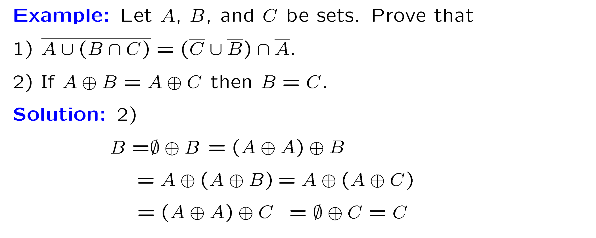
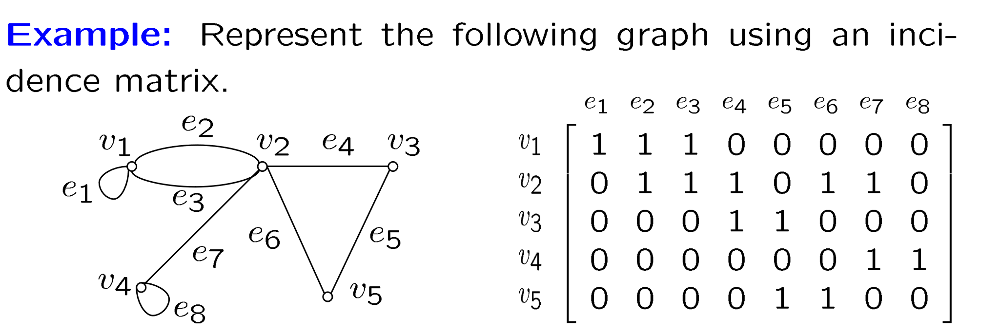
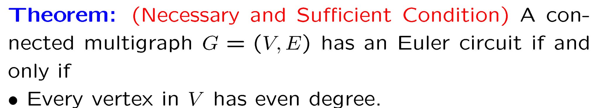
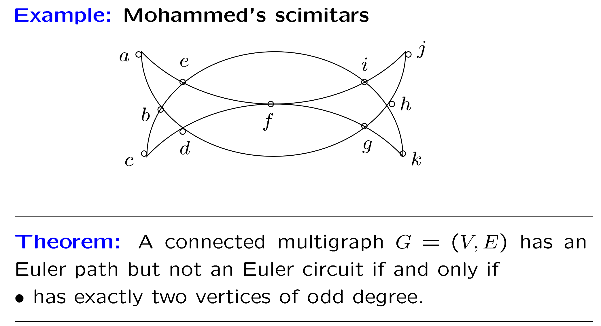
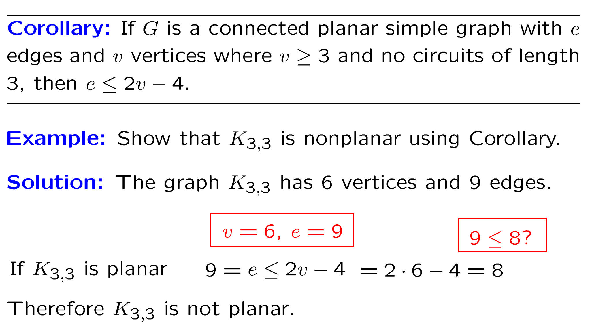
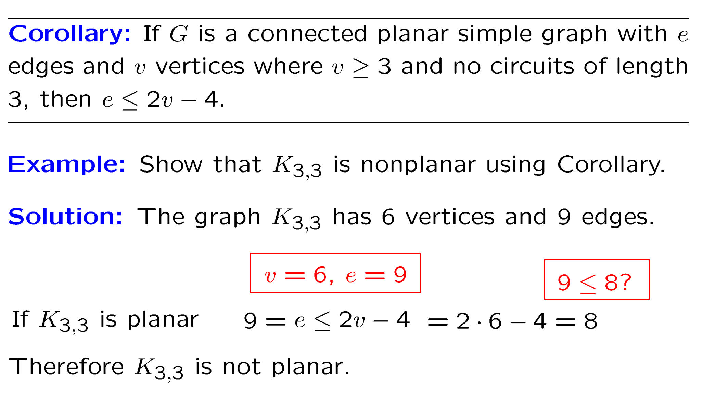

离散知识点梳理#
目录
=== "info" 如若latex公式无法显示，请重新刷新界面即可。
=== "index" [TOC]
Chapter 1 Logic and Proofs#
摘要
本章主要是逻辑表达式以及quantifier的一些概念，以及一些证明方法的介绍。
=== "glossary" |英文|中文|数学符号或含义| |:--:|:--:|----| |proposition|命题| \(p,q,r\)| |negation|否（命题）| \(\neg\)| |disjunction|并|\(\vee\)| |conjunction | 交 | \(\wedge\) | |implication | 蕴含 | \(\rightarrow\) | |equivalence | 等价 | \(\Leftrightarrow\) | |tautology | 恒真式 | | |contradiction | 矛盾式 | | |contingence | 可能式 | | |axiom | 公理 | true without proof | |theorem | 定理 | can be shown to be true | |lemma | 引理 | small theorem | |corollary | 推论 | | |conjecture | 猜想 | |达以及推导（注意quantifier）
Propositional Logic#
- Proposition must be statements.
- Disjunction and conjunction.
- Implication:\(p \rightarrow q\) means that:
- if p then q
- p implies q
- p only if q
- q is necessary for p
- p is sufficient for q
- if q whenever p
Truth table （Notice: \(p \rightarrow q\) is false only when \(p\) is true and \(q\) is false.） p - hypothesis or premise q - conclusion or consequence |p|q|\(p \rightarrow q\)| |:--:|:--:|:--:| |T|T|T| |T|F|F| |F|T|T| |F|F|T|
题目
sentence："You can not ride the roller coaster if you are under 4 feet tall unless you are older than 16 years old."
- p: you can ride the roller coaster
- q: you are under 4 feet tall
- r: you are older than 16 years old
- \((q\wedge \neg r) \rightarrow \neg q\)
- Biconditional: \(p \leftrightarrow q\) means that:
- p if and only if q
- p is necessary and sufficient for q
-
p implies q and q implies p
Truth table(same to XOR) |p|q|\(p \leftrightarrow q\)| |:--:|:--:|:--:| |T|T|T| |T|F|F| |F|T|F| |F|F|T|
-
We need to notice the priority of the operators.
- \(\neg\) has the highest priority.
- \(\wedge\) has higher priority than \(\vee\).
- \(\vee\) has higher priority than \(\rightarrow\) and \(\leftrightarrow\).
- \(\rightarrow\) and \(\leftrightarrow\) have the lowest priority.
小测
可能会考你 another logical operators, such as Sheffer stroke, Peirce arrow, NAND, NOR, XOR, XNOR.
Sheffer stroke: \(p \uparrow q \equiv \neg (p \wedge q)\) Peirce arrow: \(p \downarrow q \equiv \neg (p \vee q)\) Must be functionally complete, which means that any logical expression can be expressed by using only the operator.
- Tautology, Contradiction and Contingency.
- Logical equivalence: Formulae A and B are called logical equivalence if \(A \leftrightarrow B\) is a tautology. - Example: \(\neg p \vee q\) and \(p \rightarrow q\) are logically equivalent. - Example: \(p \rightarrow q\) and \(\neg q \rightarrow \neg p\) are logically equivalent. - Example: \(p \leftrightarrow q\) and \((p \rightarrow q) \wedge (q \rightarrow p)\) are \((\neg p \vee q) \wedge (\neg q \vee p)\) are logically equivalent.
这里几乎同概统和数逻
- There are two types of normal forms in proposition calculus.
- disjunctive normal form(DNF):\(p \vee q \vee \neg r\)
-
conjunctive normal form(CNF):\((p \vee q \vee \neg r) \wedge (p \vee \neg q \vee r)\)
-
Deductive reasoning: A conclusion is deduced from a set of premises by means of logical steps.
How to solve
- if conclusion in form of \(p \rightarrow q\), then we can convert the original proposition into \(p_1 \wedge p_2 \wedge \dots \wedge p_n \Rightarrow q\).
- Another important proof technique is proof by contradiction. We assume that the conclusion is false and then show that this assumption leads to a contradiction.
- To construct proofs using resolution as the only rule of inference, the hypothesis and the conclusion must be expressed as clauses.
Predicate and Quantifier#
- Predicate: A predicate is a statement involving one or more variables that becomes a proposition when values are substituted for the variables.
Example: \(P(x): x^2 - 5x + 6 = 0\) is a predicate. Example: \(Q(x): x^2 - 5x + 6 > 0\) is a predicate. Example: \(R(x,y): x + y = 0\) is a predicate.
- Quantifier: A quantifier is a symbol that indicates the generality of the open sentence.
- Universal quantifier: \(\forall\) means "for all" or "for every".
- Existential quantifier: \(\exists\) means "there exists" or "there is at least one".
- Example: \(\forall x P(x)\) is a proposition.
-
Example: \(\exists x P(x)\) is a proposition.
-
Banding variables
Remark: The order of the quantifiers is important. \(\forall x (P(x) \rightarrow \exists y Q(x,y))\) is not logically equivalent to \(\exists y (\forall x (P(x) \rightarrow Q(x,y)))\).
some important equivalent predicate Formula
- De Morgan's laws:
- \(\neg (\forall x P(x)) \equiv \exists x (\neg P(x))\)
- \(\neg (\exists x P(x)) \equiv \forall x (\neg P(x))\)
- Quantifier -- handle with care!
- \(\forall x (p(x) \wedge q(x)) \equiv (\forall x p(x)) \wedge (\forall x q(x))\)
- \(\exists x (p(x) \vee q(x)) \equiv (\exists x p(x)) \vee (\exists x q(x))\)
- But:
- \(\forall x (p(x) \vee q(x)) \Leftarrow (\forall x p(x)) \vee (\forall x q(x))\)
- \(\exists x (p(x) \wedge q(x)) \Rightarrow (\exists x p(x)) \wedge (\exists x q(x))\)
Chapter 2 Basic Structures: Sets & Functions#
- 区分\(\in\) & \(\subset\)
- Set operation: union:\(\cup\) Intersection\(\cap\)
If \(A \cap B = \emptyset\), then \(A\) and \(B\) are disjoint.
- Difference: \(A - B = \{x | x \in A \wedge x \notin B\}\)
- Complement: \(\bar{A} = U - A\)
- Symmetric Difference: \(A \oplus B = (A - B) \cup (B - A)\) 
The power Set
Definition: The power set of a set \(A\), denoted by \(P(A)\) or \(2^S\), is the set of all subsets of \(A\). \(\(2^S = \{T | T \subseteq S\}\)\)
Chapter 7 Relations#
7.1 Relations and their properties#
- We write \(aRb\) for \((a,b) \in R\)
Definition: A binary relation R between A and B is a subset of Cartesian product \(A \times B\) : \(R \subseteq A \times B\)
When \(A=B\), \(R\) is called a relation on set \(A\).
-
Distinguish domain and range. (just like function)
-
n-ary relation: n is called its degree.
-
The composite of R and S is the relation: \(S \circ R = \{(a,c)|a \in A, c \in C \quad \exists b \in B\}\) such that \((a,b)\in R\) and \((b,c)\in S\)
-
Power: \(R^{n+1} = R^n \circ R\)
-
Inverse:\(R^{-1} = \{(y,x)|(x,y) \in R\}\)
-
Reflexive / Irreflexive: R is reflexive \(\Leftrightarrow \forall x \in A, (x,x) \in R\)
-
symmetric / antisymmetric:
R is symmetric \(\Leftrightarrow \forall x, y \in A, (x,y)\in R \Rightarrow (y,x)\in R \Leftrightarrow R^{-1} = R\)
R is antisymmetric: \(\Leftrightarrow \forall x, y \in A, (x,y)\in R \quad and \quad (y,x)\in R \Rightarrow x = y \Leftrightarrow R \cap R^{-1} \subseteq R_=\)
Non-symmetric \(\not\Leftrightarrow\) antisymmetric (eg. \(R_=\))
- R is transitive \(\Leftrightarrow \forall x, y, z \in A((x,y)\in R \wedge(y,z) \in R) \Rightarrow (x,z)\in R\)
Theorem:R on a set A is transitive if and only if \(R^n \subseteq R\) for \(n = 2, 3, \dots\)
Inductive step: \(R^{n+1}\) is also a subset of \(R\)
7.2 Representing Relations#
- Matrices representation.
- reflexive \(\Leftrightarrow\) All terms \(m_{ii}\) in the main diagonal of \(M_R\) are 1
- symmetric \(\Leftrightarrow m_{ij} = m_{ji}\) for all \(i,j\).
- anti-symmetric \(\Leftrightarrow\) if $m_{ij} = 1 $ and \(i\not= j\) then \(m_{ij} = 0\)
- Transitive \(\Leftrightarrow\) whenever \(c_{ij}\) in \(C=M_R^2\) is nonzero then entry \(m_{ij}\) in \(M_R\) is also nonzero
- Digraphs representation.
- A edge \((a,b)\), a isiInitial vertx and b is terminal vertex
- A edge of form \((a,a)\), called loop
- reflexible \(\Leftrightarrow\) There are loops at every vertex of digraph.
- symmetric \(\Leftrightarrow\) Every edge between distinct vertices is accompanied by a edge in the opposite direction.
7.3 Closures of Relations#
- Definition: \(R \& S\) are relation,while S satisfy:
- S with property P and \(R \subseteq S\)
- \(\forall S'\) with property P and \(R \subseteq S'\) , then \(S \subseteq S'\)
- Theorem: R be a relation on set A.
- The reflexive closure of relation R: $$ r(R) =R \cup \Delta $$ , where \(\Delta = \{(a,a)|a \in A\}\)
- The symmmetric closure of relation R: $$ S(R) = R \cup R^{-1} $$
- Definition: Path is a sequence of one or more edges in graph G.
Theorem: Let R be a relation on set \(A\). There is a path of length n from a to b \(\Leftrightarrow (a,b) \in R^n\)
- Definition: The connectivity relation \(R^* = \{(a,b)|\text{there is a path from a to b}\}\). $$ R^* = \cup^{\infin}_{n=1} R^n $$
Theorem: The transitive closure of R : $$ t(R) = R^* $$
- WARSHALL'S algorithm!
7.4 Equivalence Relations#
-
Definition: Relation \(R\)~ : \(A \leftrightarrow A\) is an equivalence relation, if it reflexive, symmetric and transitive.
-
Definition: Let \(R: A \leftrightarrow A\) is an equivalence relation. For any \(a \in A\), the equivalence class of a is the set of the elements related to a. $$ [a]_R = {x\in A|(x,a) \in R} $$ . If \(b\in [a]_R\). b is called a representative of this equivalence class.
The properties of equivalence classes are: 1. \(\forall a \in A, a[R] \not ={\emptyset}\)( by reflexive, \(a \in [a]_R\) ) 2. \(\forall a,b \in A, [a]_R = [b]_R\) or \([a]_R \cap [b]_R = \emptyset\) (by symmetric and transitive) 3. $ \cup_{a\in A}[a]_R = A$ (\(A \subseteq \cup_{a\in A}, [a]_R \subseteq A\)) 4. \([a]_R \cap [b]_R \not = \emptyset \Rightarrow [a]_R = [b]_R\) (by symmetric and transitive)
-
Definition: The set of all equivalence classes of R is called the quotient set of A by R. $$ A/R = {[a]_R|a \in A} $$
Remark: 1. If A is finite, then $|A/R| $ is also finite. 2. If A has n elements, and if every \([a]_R\) has m elements, then \(|A/R| = n/m\)
-
Definition: A partition \(\pi\) on a set \(S\) is a family of nonempty subsets of \(S\) such that every element of \(S\) is in exactly one of these subsets. $$ \pi = {A_1, A_2, \dots, A_n}\
- \cup_{k=1}^n A_k =S \
- A_j \cap A_k = \emptyset \text{ for every j,k with }j \not= k, 1 < j, k < n
$$
Theorem: Let \(R\) be an equivalence relation on a set \(S\). Then the equivalence of classes of \(R\) form a partition of \(X\). Conversely, given a partition \(\{A_i|i \in I\}\) of \(S\), there is an equivalence relation \(R\) on \(S\) such that the equivalence classes of \(R\) are the sets \(A_i\).
7.5 Partial Orderings#
-
Definition: A relation \(R_{\preceq}\) on a set \(S\) (\(S \leftrightarrow S\)) is a partial ordering if it is reflexive, antisymmetric and transitive.
-
Definition: The element a and b of s poset \(S\) are comparable if either \(a \preceq b\) or \(b \preceq a\). Otherwise, a and b are incomparable.
- Definition: A poset \(S\) is a total ordering or linear ordering if every pair of elements of \(S\) is comparable. A totaly ordered set is also called a chain.
- Lexicograpic order: Construct a poset \(S\) by taking the Cartesian product of two posets \(S_1\) and \(S_2\). The relation \(\preceq\) on \(S\) is defined by $$ (a_1, a_2) \preceq (b_1, b_2) \Leftrightarrow a_1 \preceq_1 b_1 \text{ and } a_2 \preceq_2 b_2 $$
-
hasse diagram: A hasse diagram of a poset \(S\) is a diagram that represents the poset \(S\) using points and line segments. The points of the diagram are the elements of \(S\), and there is a line segment between \(a\) and \(b\) if \(a \prec b\) and there is no element \(c\) such that \(a \prec c \prec b\).
- Start with the directed graph for the relation.
- Remove all loops.
- Remove all edges that must be present because of the transitive property.
- Finally, arrange each edges so that its initial vertex is below its terminal vertex, Remove all arrows.
-
Definition: Let \((A, \preceq)\) be a partial ordered set, \(B\subseteq A\).
- a is a maximal element of B if there is no element \(b \in B\) such that \(a \prec b\).
- b is a minimal element of B if there is no element \(b \in B\) such that \(b \prec a\).
- a is a greatest element of B if \(a \preceq b\) for every \(b \in B\).
- b is a least element of B if \(b \preceq a\) for every \(b \in B\).
- a is an upper bound of B if \(b \preceq a\) for every \(b \in B\).
- b is a lower bound of B if \(a \preceq b\) for every \(b \in B\).
- a is the least upper bound of B if a is an upper bound of B and if \(a \preceq c\) for every upper bound c of B.
- b is the greatest lower bound of B if b is a lower bound of B and if \(c \preceq b\) for every lower bound c of B.
Remark: Can have many minimal/maximal elements, but only one least/greatest element.
-
Definition: A poset \(S\) is a lattice if every pair of elements of \(S\) has a least upper bound and a greatest lower bound.
Chapter 8 Graph#
8.1 Basic introduction#
-
Definition: A graph \(G\) is an ordered pair \((V,E)\), where \(V\) is a finite nonempty set and \(E\) is a set of two-element subsets of \(V\) which is called edges.
Definition: A multigraph is a graph that is permitted to have multiple edges with the same endpoints.(don't have loops)
Definition: A pseudograph is a graph that is permitted to have loops. Sum table:

-
Terminology: - Two vertices u and v are adjacent or neighbors if {u,v} is an edge of G. - If {u,v} is an edge of G, then u and v are incident with the edge {u,v}. - The degree of a vertex v, denoted by deg(v), is the number of edges incident with v, with loops counted twice.(Pendant vertex: deg(v) = 1)
-
Theorem: Let \(G = (V,E)\) be a graph with \(n\) vertices and \(m\) edges. Then $$ \sum_{v \in V} deg(v) = 2m $$
Corollary(结论): The number of vertices of odd degree in any graph is even. Corollary: $$ \sum_{i=1}^{n}{deg^{-}{v_i}} = \sum_{i=1}^{n}{deg^{+}{v_i}} = |E|$$
-
Some simple graph:
- complete graph: \(K_n\) is a simple graph with n vertices and exactly one edge between each pair of distinct vertices.(\(|E| = \frac{n(n-1)}{2}\))
- cycles: \(C_n\) is a simple graph with n vertices \(v_1, v_2, \dots, v_n\) and edges \(\{v_1, v_2\}, \{v_2, v_3\}, \dots, \{v_{n-1}, v_n\}, \{v_n, v_1\}\)
- wheels: \(W_n\) is a simple graph with n vertices \(v_1, v_2, \dots, v_n\) and edges \(\{v_1, v_2\}, \{v_2, v_3\}, \dots, \{v_{n-1}, v_n\}, \{v_n, v_1\}, \{v_1, v_3\}, \{v_1, v_4\}, \dots, \{v_1, v_n\}\)

- n-cubes: \(Q_n\) is a simple graph with \(2^n\) vertices \(v_1, v_2, \dots, v_{2^n}\) and edges \(\{v_i, v_j\}\) if and only if \(v_i\) and \(v_j\) differ in exactly one bit position.
- bipartite graph: A graph \(G = (V,E)\) is bipartite if $$ V = V_1 \cup V_2 \ V_1 \cap V_2 = \emptyset$$ such that no edge has both endpoints in the same subset.
- complete bipartite graph: \(K_{m,n}\) is a bipartite graph with \(m+n\) vertices \(v_1, v_2, \dots, v_m\) and \(u_1, u_2, \dots, u_n\) and edges \(\{v_i, u_j\}\) for all \(i = 1, 2, \dots, m\) and \(j = 1, 2, \dots, n\).
- New graphs from old:
- subgraph: \(G' = (V', E')\) is a subgraph of \(G = (V,E)\) if \(V' \subseteq V\) and \(E' \subseteq E\).
- complement: \(G' = (V, E')\) is the complement of \(G = (V,E)\) if \(E' = \{ \{u,v\} | u,v \in V, u \not= v, \{u,v\} \not\in E\}\)
- union: \(G_1 = (V_1, E_1)\) and \(G_2 = (V_2, E_2)\), then \(G_1 \cup G_2 = (V_1 \cup V_2, E_1 \cup E_2)\)
- join: \(G_1 = (V_1, E_1)\) and \(G_2 = (V_2, E_2)\), then \(G_1 \vee G_2 = (V_1 \cup V_2, E_1 \cup E_2 \cup \{ \{u,v\} | u \in V_1, v \in V_2\})\)
8.2 Representing graphs:#
- adjacency matrix: \(A = (a_{ij})\) is a \(n \times n\) matrix such that \(a_{ij} = 1\) if \(\{v_i, v_j\} \in E\) and \(a_{ij} = 0\) otherwise.
- incidence matrix: \(B = (b_{ij})\) is a \(n \times m\) matrix such that \(b_{ij} = 1\) if \(v_i\) is incident with \(e_j\) and \(b_{ij} = 0\) otherwise. 
- adjacency list: For each vertex \(v_i\), we have a list of all vertices adjacent to \(v_i\). (for directed graph, we have two lists for each vertex, one for the vertices adjacent to \(v_i\) and one for the vertices from which there is an edge to \(v_i\))
8.3 Connection#
- A path or circuit is simple if it does not contain a repeated edge.

- Counting paths between vertices: The number of paths of length n from vertex \(v_i\) to vertex \(v_j\) in a graph G is the \((i,j)\) entry of the matrix \(A^n\).
8.4 Euler and Hamilton Paths#
- Definition: A Euler path in a graph G is a simple path that contains every edge of G. A Euler circuit is a simple circuit that contains every edge of G.
- 
-
Euler path judge. 
-
Definition: A Hamilton path in a graph G is a simple path that contains every vertex of G.\(V = \{v_1, v_2, \dots, v_n\}\), then \(v_1, v_2, \dots, v_n\) is a Hamilton path if and only if \(\{v_1, v_2\}, \{v_2, v_3\}, \dots, \{v_{n-1}, v_n\}\) are edges of G.
Remark: A Hamilton circuit in a graph G is a simple circuit that contains every vertex of G.
8.5 Planar Graphs#
- Definition: A graph is planar if it can be drawn in the plane without any edges crossing.
- Theorem: Euler Formula -> Let \(G = (V,E)\) be a connected planar graph with \(n\) vertices, \(m\) edges and \(r\) regions. Then \(n - m + r = 2\).
 

8.6 Coloring Graphs#
Chapter 9 Trees#
本章和fds学习的内容基本相似。
glosssary
| 英文 | 中文 | 数学符号或含义 |
|---|---|---|
| ancestor | 祖先 | |
| descendant | 后代 | |
| siblings | 兄弟 |
9.1 Introduction to Trees#
- Definition: A tree is a connected undirected graph with no cycles.(simple circuit)
- Definition: A forest is a undirected graph with no cycles.
- m-ary tree: A tree in which every internal vertex has no more than m children.
- full m-ary tree: A m-ary tree in which every internal vertex has exactly m children.(which has i internal vertices)
Attributes: 1. contains \(n = mi + 1\) vertices 2. contains \(l = [(m-1)n +1]/m\) leaves. 3. height \(h \ge [log_m^l]\), if full and balanced, \(h = [log_m^l]\)
- ordered rooted tree: A rooted tree in which the children of each internal vertex are ordered.
9.2 applications of trees#
- balanced tree: A tree is balanced if all its leaves are at h or h-1 level.
- prefix code: can be represented using a binary tree in which no codeword is a prefix of another codeword.(Huffman code)
- decision tree: A decision tree is a rooted tree in which each internal vertex corresponds to a decision, with a subtree for each possible outcome of the decision.
- tree traversal: preorder, inorder, postorder.
9.3 Spanning Trees#
- Definition: A spanning tree of a connected graph \(G\) is a subgraph of \(G\) that is a tree containing every vertex of \(G\).
- minimum spanning tree: A spanning tree of a weighted graph \(G\) with weight function \(w\) is a spanning tree with minimum weight.
Kruskal's algorithm: 1. Sort the edges of \(G\) in increasing order of weight. 2. Add the edges to \(T\) in increasing order of weight, unless doing so would create a cycle. Prim's algorithm: 1. Choose a vertex \(v\) to start the tree. 2. Add the edge of least weight incident with \(v\) to the tree. 3. Repeat step 2 until all vertices are in the tree.